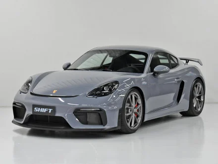

Performance Incomparável
Motores potentes, engenharia de precisão e tecnologia de ponta. A Porsche entrega velocidade, controle e emoção ao dirigir como nenhuma outra.
Motores potentes, engenharia de precisão e tecnologia de ponta. A Porsche entrega velocidade, controle e emoção ao dirigir como nenhuma outra.
O estilo da Porsche combina elegância com esportividade. Cada linha do carro é pensada para desempenho e beleza — um ícone que atravessa gerações.

Com modelos como o Taycan, a Porsche une tradição e futuro — apostando em veículos elétricos sem perder o DNA esportivo.